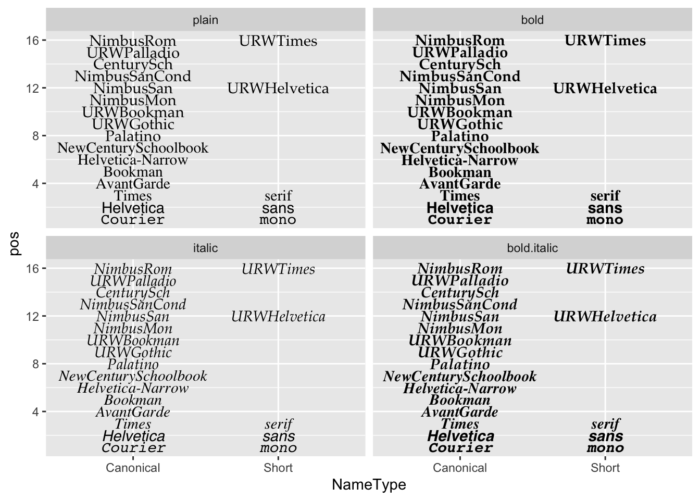

1 글꼴 분류1
- 활자(Type)는 본래는 글자를 만드는 데 사용된 나무 또는 금속 조각을 일컫는 말이었습니다.
- 타이포그래피(Typography): 인쇄된 텍스트의 스타일과 모양을 가리키는 디자인 용어입니다.
- 서체(또는 글꼴 모음, Typeface): 글자 및 기호가 서로 비슷한 특징을 가지도록 디자인된 문자fh 타임즈(Times), 에어리얼(Arial) 및 미니언(Minion)을 들 수 있습니다.
- 글꼴(Font): 서체의 특정 스타일을 지칭하는데, 예를 들어, 에어리얼 블랙(Arial Black)은 에어리얼 서체 중 한 글꼴이며, 미니언 프로 이탤릭체(Minion Pro Italic)는 미니언 글꼴 모음에 포함되어 있는 글꼴이다.
글꼴(Font)는 다양하지만 크게 다음 5가지로 영문의 경우 분류된다. 글꼴은 기본적으로 세리프(serif)와 산세리프(sans serif)의 2가지 스타일로 구분되는데 세리프는 글자의 획 끝에 작은 삐침이 있는 글꼴이며 산스(sans)은 라틴어로 없다는 뜻이기 때문에 삐침이 없는 글꼴을 지칭합니다.
- serif
- sans serif
- script
- monospaced
- display
가장 쉽게 분류되는 monospaced 글꼴은 코드를 작성하기 위해 등간격을 갖는 글꼴로 consolas, D2 Coding이 대표적이다. 산세리프(Sans serif)와 세리프(Serif) 글꼴은 본문에 사용하기 적합하지만, 좀더 시선을 끄는 디자인을 위해서는 조금 더 매력적인 디스플레이(Display) 혹은 스크립트(Script)을 선택하고, 제목(Title)에는 산세리프 글꼴을 사용하는 것이 일반적이다.

1.1 typeface vs font
typeface는 서체로 번역되고 font는 글꼴로 번역된다. 하나의 typeface에 다수 font가 포함될 수 있다. 팬그램(Pangram)은 ’모든 글자’라는 뜻으로 주어진 모든 문자를 적어도 한 번 이상 사용하여 만든 문장을 뜻한다. 팬그램은 로렘 입숨처럼 글꼴 샘플을 보여주거나 장비를 테스트하는 데 사용된다. 영어 팬그램으로 가장 유명한 ’The quick brown fox jumps over the lazy dog’는 19세기부터 사용되어 왔다.
1.2 문서 - R 마크다운
아래 서체(typeface, font family)는 Noto Sans CJK KR이나 글꼴(font)은 크기, 굵기, 스타일에 따라 다양하게 텍스트를 표현할 수 있다.
서체(typeface, Noto Sans CJK KR)
다람쥐 헌 쳇바퀴에 타고파
글꼴(font)
다람쥐 헌 쳇바퀴에 타고파
다람쥐 헌 쳇바퀴에 타고파
다람쥐 헌 쳇바퀴에 타고파
다람쥐 헌 쳇바퀴에 타고파
다람쥐 헌 쳇바퀴에 타고파
다람쥐 헌 쳇바퀴에 타고파
R마크다운에서 다양한 서체를 글꼴을 달리하여 표현하는 방식은 css를 해당 텍스트에 다음과 같이 적용하는 것이다.
<p style="font-family: Noto Sans CJK KR; font-size:17pt; font-style:italic, font-weight:200">
다람쥐 헌 쳇바퀴에 타고파
</p>2 글꼴 출력2
fontface에 대한 감을 갖기 위해 대표 글꼴을 ggplot으로 화면에 찍어본다.
library(tidyverse)
fonttable <- tribble(~"Short", ~"Canonical",
"mono", "Courier",
"sans", "Helvetica",
"serif", "Times",
"", "AvantGarde",
"", "Bookman",
"", "Helvetica-Narrow",
"", "NewCenturySchoolbook",
"", "Palatino",
"", "URWGothic",
"", "URWBookman",
"", "NimbusMon",
"URWHelvetica", "NimbusSan",
"", "NimbusSanCond",
"", "CenturySch",
"", "URWPalladio",
"URWTimes", "NimbusRom")
fonttable <- fonttable %>%
mutate(pos = row_number())
fonttable_tbl <- fonttable %>%
pivot_longer(cols = c(Short, Canonical), names_to = "NameType", values_to = "Font")
# Face table
facetable <- tibble ("Face" = c("plain","bold","italic","bold.italic")) %>%
mutate(Face = factor(Face, levels = c("plain","bold","italic","bold.italic")))
fullfonts <- merge(fonttable_tbl, facetable)
fullfonts %>%
ggplot(aes(x=NameType, y=pos)) +
geom_text(aes(label=Font, family=Font, fontface=Face)) +
facet_wrap(~ Face, ncol=2)
3 R 글꼴
ggplot에 텍스트를 화면에 표현하는 그래픽 장치(Graphics Device, GD)는 5가지가 존재한다.
png()pdf()- 스크린 화면 : Windows
- 스크린 화면 : Mac
- 스크린 화면 : Linux
5가지 그래픽 장치는 서로 달라 정확한 텍스트를 화면이나 png, pdf 파일이나 이미지에 넣는 것은 쉽지 않지만, 다음 팩키지가 그 역할을 수행하고 있다.
showtextextrafontsystemfonts
4 font 문제지
ggplot 그래프에 담아내야 하는 글꼴은 다양한 것이 포함된다. 코드에 대한 글꼴(consolas, D2 Coding 등), 이모지 글꼴, 한글/영문 글꼴 등 다양한다.
4.1 환경설정
로고, 이모지, 코딩에 해당되는 글꼴을 R에서 불러와서 사용할 수 있도록 준비한다. .ttf 트루타입 폰트 대신 .otf 폰트를 설치할 수 있는 showtext 팩키지를 폰트 관리자(?)로 사용한다.
library(tidyverse)
library(ragg)
library(systemfonts)
library(showtext)
## 로고
font_add("Font Awesome 5 brands",
regular = "Font Awesome 5 Free-Regular-400.otf")
## 코딩 - Consolas, D2 Coding
font_add("Consolas",
regular = "consola.ttf",
bold = "consolab.ttf",
italic = "consolai.ttf",
bolditalic = "consolaz.ttf")
font_add("D2 Coding",
regular = "D2Coding-Ver1.3.2-20180524.ttf",
bold = "D2CodingBold-Ver1.3.2-20180524.ttf")
## 이모지 폰트
font_add("Twitter Color Emoji",
regular = "TwitterColorEmoji-SVGinOT.ttf")
# font_add("Noto Color Emoji",
# regular = "NotoColorEmoji.ttf")
font_families()[1] "sans" "serif" "mono"
[4] "wqy-microhei" "Font Awesome 5 brands" "Consolas"
[7] "D2 Coding" "Twitter Color Emoji" 4.2 영문 테스트
“The quick brown fox jumps over the lazy dog” 영문 텍스트와 관련하여 영어로 생길 수 있는 다양한 사례를 바탕으로 글꼴을 ggplot에 찍어보자.
## 예제 텍스트
code <- "x <- y != z : Consolas"
logo <- "twitter : Font Awesome 5 brands"
fallback_text <- "This is English, 이것은 한국어다. この文は日本語です 🚀"
emojis <- "👩🏾💻🔥📊🤩🧑🦯"
english_text <- "The quick brown fox jumps over the lazy dog"
eng_p <- ggplot() +
geom_text(
aes(x = 0, y = 5, label = code),
family = "Consolas", size = 15
) +
geom_text(
aes(x = 0, y = 4, label = logo),
family = "Font Awesome 5 brands", size = 15
) +
geom_text(
aes(x = 0, y = 3, label = fallback_text),
family = "serif", size = 15
) +
geom_text(
aes(x = 0, y = 2, label = emojis),
family = "Twitter Color Emoji", size = 15
) +
geom_text(
aes(x = 0, y = 1, label = english_text),
family = "sans", size = 15
) +
expand_limits(y = c(0, 5)) +
theme_void()
eng_p %>%
ggsave(filename = "fig/ggplot-tyopgraphy-eng.png")
4.3 한글 테스트
## 예제 텍스트
korean_text <- "다람쥐 헌 쳇바퀴에 타고파: Noto Sans CJK KR"
korean_code <- "library(tidyvere); x <- y != z; #한글 주석 : D2 Coding"
logo <- "twitter"
emojis <- "👩🏾💻🔥📊🤩🧑🦯"
fallback_text <- "This is English, 이것은 한국어다. この文は日本語です 🚀: Noto Sans CJK KR"
# 시각화
kor_p <- ggplot() +
geom_text(
aes(x = 0, y = 5, label = korean_text),
family = "Noto Sans CJK KR", size = 15
) +
geom_text(
aes(x = 0, y = 4, label = korean_code),
family = "D2 Coding", size = 15
) +
geom_text(
aes(x = 0, y = 3, label = logo),
family = "Font Awesome 5 brands", size = 15
) +
geom_text(
aes(x = 0, y = 2, label = emojis),
family = "Twitter Color Emoji", size = 15
) +
geom_text(
aes(x = 0, y = 1, label = fallback_text),
family = "Noto Sans CJK KR", size = 15
) +
expand_limits(y = c(0, 5)) +
theme_void()
kor_p %>%
ggsave(filename = "fig/ggplot-tyopgraphy.png")
데이터 과학자 이광춘 저작
kwangchun.lee.7@gmail.com